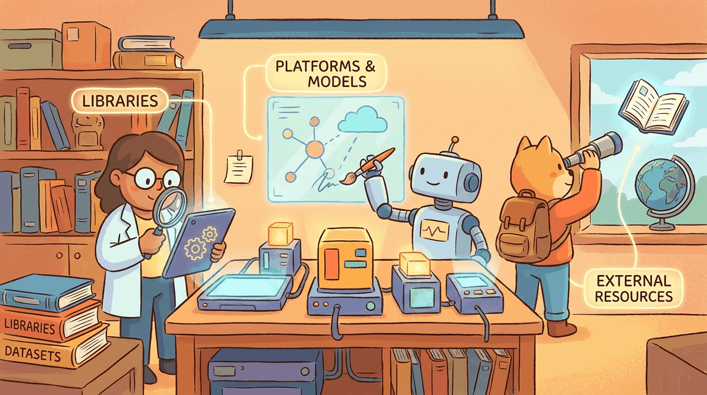

"In production, the eval set is the spec."
Author's notebook
Part VIII split into two halves: evaluation (how do we know it works?) and production (how do we keep it working?). The eval toolbox is OpenAI Evals, HELM, lm-evaluation-harness, Inspect AI. The production toolbox is the serving stack (vLLM, TGI, SGLang, Triton) plus the observability layer (Arize, LangSmith, Helicone, Phoenix).
For evaluation:
pip install lm-eval inspect-ailm-evaluation-harness covers most standard benchmarks; Inspect AI from the UK AISI covers agent and safety evals. For production serving: vLLM is the default. Appendix K covers the serving side in detail.
Sections in This Chapter
- 48.1 Platforms A chapter from the Building Conversational AI textbook.
- 48.2 Libraries & Frameworks A chapter from the Building Conversational AI textbook.
- 48.3 Datasets & Benchmarks A chapter from the Building Conversational AI textbook.
- 48.4 Models A chapter from the Building Conversational AI textbook.
- 48.5 External Reading & Communities A chapter from the Building Conversational AI textbook.
- 48.6 Production Agent Deployment: Observability, Cost, Guardrails A comprehensive chapter from the Building Conversational AI textbook.
- 48.7 Model Registry and Deployment Workflows A comprehensive chapter from the Building Conversational AI textbook.
- 48.8 LLM Evaluation Dashboards and Observability A comprehensive chapter from the Building Conversational AI textbook.
- 48.9 Inference Scaling and Load Balancing A comprehensive chapter from the Building Conversational AI textbook.
- 48.10 Production Data Pipelines and Serving at Scale A comprehensive section from the Building Conversational AI textbook.
- 48.11 LLM System Observability Metrics, traces, logs for LLM applications. OpenLLMetry, Phoenix, LangSmith, Helicone, Logfire.
- 48.12 Monitoring and Drift Detection Prompt drift, response drift, quality regression detection, Evidently, WhyLabs LangKit, NannyML, eval-in-prod patterns.
- 48.13 Model Registry and Lifecycle MLflow, W&B Registry, HuggingFace Hub, Vertex AI, SageMaker. Prompts and adapters as first-class artifacts.
What Comes Next
Part IX turns to safety, security, and ethics: alignment, red-teaming, privacy, and the legal landscape. Chapter 51 closes Part IX with the safety toolbox.